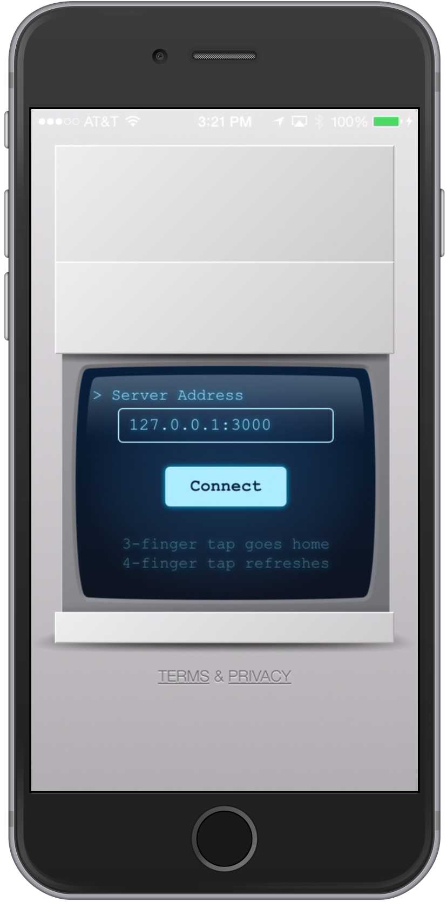
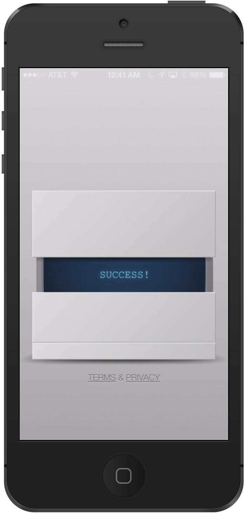
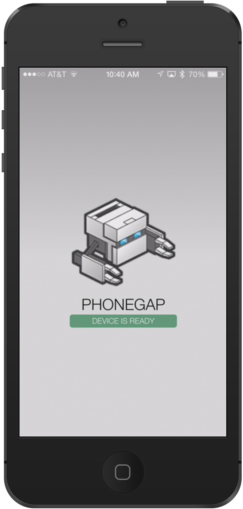
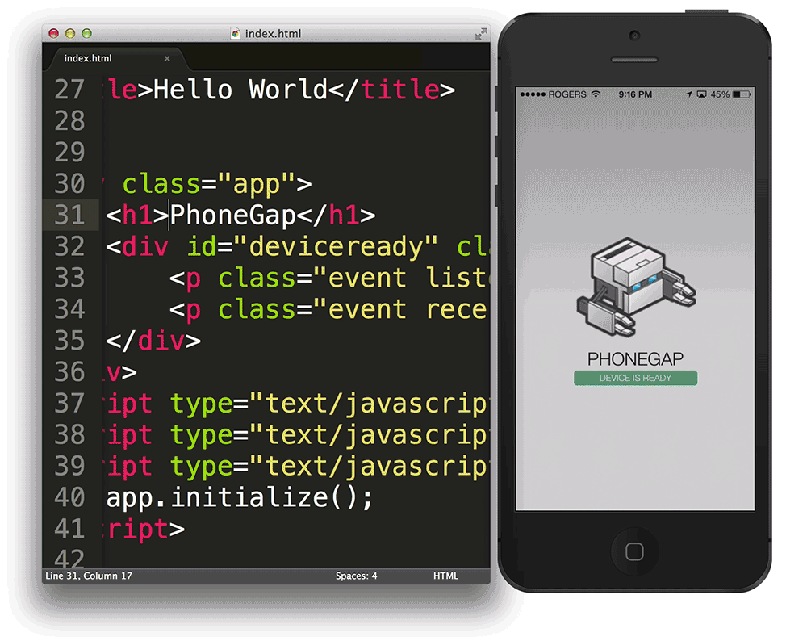

Getting Started with PhoneGap
PhoneGap allows for users to create mobile apps using HTML, CSS, and Javascript. Apps created with PhoneGap target iOS, Android, and Windows all with a single codebase. This tutorial will go through the basics of using PhoneGap.Installation
Before installing the PhoneGap CLI, you need to have node.js and git.Then you can use a Command Line Interface and paste this command to download PhoneGap.
$ npm install -g phonegap@latest You can ensure that it's installed by typing
phonegap into the command line.
$ phonegap
Usage: phonegap [options] [commands]
Description:
PhoneGap command-line tool.
Commands:
help [command] output usage information
create create a phonegap project
...
Download the free PhoneGap Developer app from iTunes, Google Play, or Windows Phone Store. Opening the app will show this screen:

Create an App
Back in the terminal, create a new app by entering the following command:
$ phonegap create myApp
Creating a new cordova project.
This should create a new project directory myApp/ containing the following:
config.xml hooks platforms plugins www
The content of your app will be within the www/ folder, the entry point being the index.html file.
Preview the App
The PhoneGap CLI starts a small web server to host your project and returns the the server address. Start the web server by typingphonegap serve in the command line.
$ phonegap serve
[phonegap] starting app server...
[phonegap] listening on 192.168.1.11:3000
[phonegap]
[phonegap] ctrl-c to stop the server
[phonegap]
Now you can connect to 192.168.1.11:3000 on the mobile app to preview your app.
  
Edits to index.html are automatically updated as the server is running.
